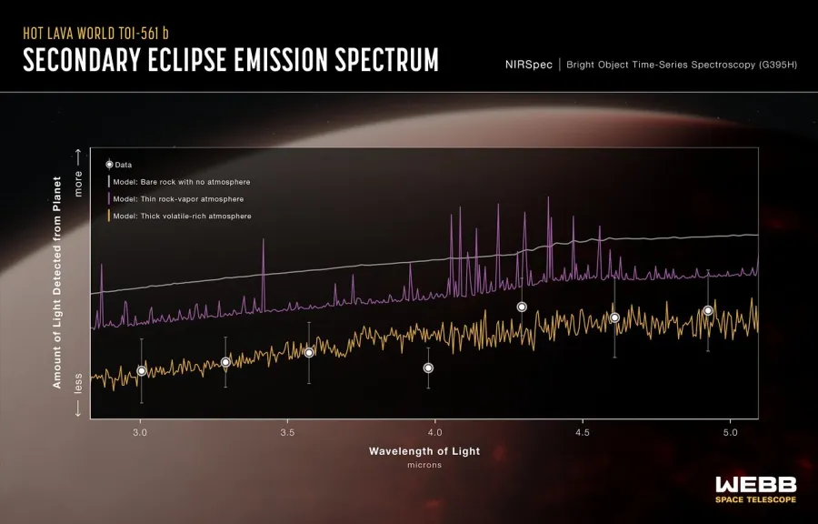

11. Dezember 2025
TOI-561 b: bislang stärkster Hinweis auf eine Atmosphäre bei einem Gesteinsplaneten
Das James-Webb-Weltraumteleskop hat die Tagseite der ultraheißen Supererde TOI-561 b vermessen. Als nackter Fels müsste sie fast 2700 Grad Celsius heiß sein; gemessen wurden aber eher 1800 Grad. Nach Ansicht des Teams lässt sich das am besten mit einer dichten Atmosphäre aus flüchtigen Stoffen über einem globalen Magmaozean erklären.
TOI-561 b hat etwa den 1,4-fachen Erdradius und umrundet seinen Stern in weniger als 11 Stunden. Der Stern ist etwa doppelt so alt wie die Sonne und arm an Eisen. Die NASA spricht vom bisher stärksten Hinweis auf eine Atmosphäre bei einem Gesteinsplaneten außerhalb des Sonnensystems. Die genaue Zusammensetzung ist noch offen.
Quellen: NASA: "NASA's Webb Detects Thick Atmosphere Around Broiling Lava World.", 11.12.2025; ESA/Webb: "Super-Earth Exoplanet TOI-561 b (NIRSpec Emission Spectrum)." (image page), 11.12.2025